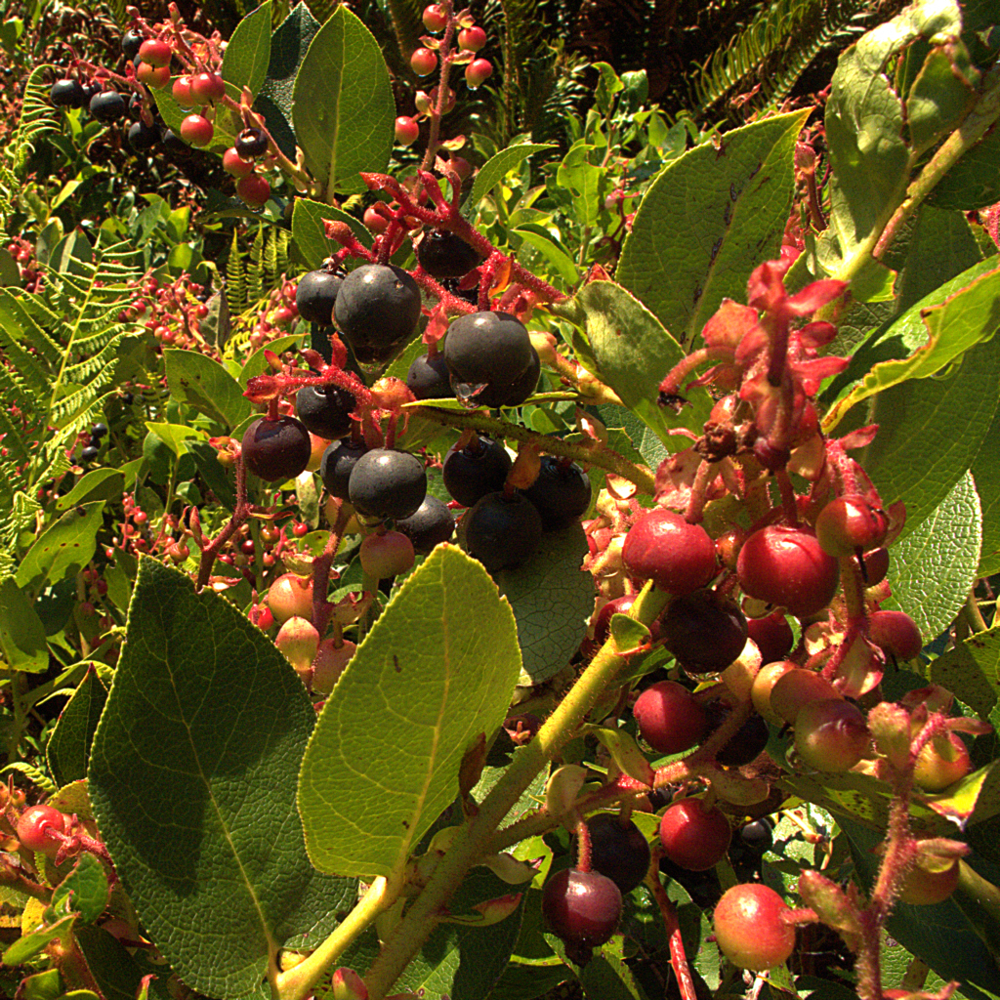

Photo by: John Rusk
The flowers, leaves, and berries are all edible and can be eaten raw or cooked. You should pick the berries when they are a deep blue color and look plump.
1 tbs salal flowers and/or leaves (they can be raw or dried)
1 c boiled water
If using leaves make sure to crush or cut the leaves. Add the flowers and/or leaves to a cup and add boiled water. Let steep for 20 minutes. Add sweetener to taste.
2 c salal berries (I would recommend adding half salal berries and half other berries)
2 tbs honey
1 tsp lemon juice
Add berries, honey, and lemon juice to a blender and blend until smooth. Line a cookie sheet with parchment paper. Pour the mixture onto the cookie sheet and spread out the mixture. The fruit leather can be dried in the sun or in the oven. If your drying the fruit leather in the sun it can take 2 – 4 days. If you’re using the oven preheat the oven to the lowest temperature (about 170 degrees). The drying process will take about 6 – 10 hours.